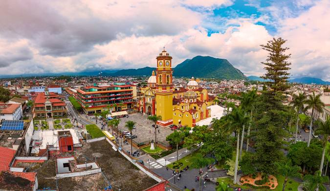

DESCUBRE LA MAGIA DE ORIZABA
Orizaba te espera con su historia, cultura y paisajes impresionantes. Desde sus majestuosas montañas hasta sus encantadoras calles coloniales, vive una experiencia única en el corazón de México.

Orizaba te espera con su historia, cultura y paisajes impresionantes. Desde sus majestuosas montañas hasta sus encantadoras calles coloniales, vive una experiencia única en el corazón de México.
Explora los sitios más emblemáticos de Orizaba, desde el teleférico hasta el Palacio de Hierro.
Ver más